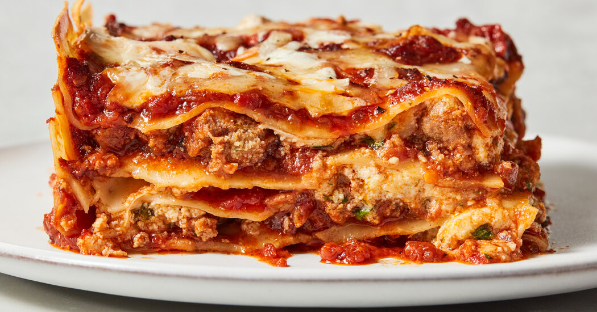

Easy Lasagna

Traditional lasagna is a once-a-year project for me. I love it deeply, but it’s rare that I can carve out time for it. When it does happen, it’s in the dead of winter when I have absolutely nothing else to do but spend the entire day in the kitchen.
While it’s impossible to beat the classic version — with a homemade bolognese sauce and, when I can manage it, homemade pasta — I’m all about an easier version that makes lasagna a much more frequent occurrence. This recipe is exactly that. This lasagna is about as low-lift as you can get while still achieving cheesy, crowd-pleasing results. Here’s how to make it.
Ingredients
- Ground beef: You’ll need 1 pound of lean ground beef.
- Marinara sauce: Since this recipe starts with a jar of marinara for ease, make sure it’s one that tastes great. My favorite brand is Rao’s, but choose your personal favorite.
- Cheese: Use two types of cheese – shredded low-moisture mozzarella and whole-milk ricotta.
- Regular lasagna noodles: While classic dry lasagna noodles are typically boiled before they’re layered, there’s no real reason why you have to cook them ahead of time — they can actually be layered in with the sauce and cheese as is. And yes, this is just regular lasagna noodles!
Steps
- Brown the beef and onion. Cook, breaking the beef up into small pieces with a wooden spoon, until the beef is cooked through.
- Prepare the baking dish and assemble the meat sauce. Spread a thin layer of marinara sauce in the bottom of a 9×13-inch baking dish. Stir the remaining sauce into the ground beef mixture.
- Layer the lasagna. Place 5 lasagna noodles in the baking dish, breaking them if needed to create a single layer. Dollop and spread 1 cup of the ricotta cheese over the noodles. Dollop and spread about 1 1/2 cups of the meat sauce on the ricotta, then sprinkle with 1 cup of the mozzarella. Continue layering the lasagna. Top with a final layer of 5 noodles and the remaining sauce, spreading the sauce thin so that it almost completely covers the noodles. Cover the dish tightly with aluminum foil.
- Bake the lasagna. Check after 1 hour to make sure the noodles are done by poking the lasagna with a knife; the knife should slide easily through all the layers.
- Sprinkle with the remaining mozzarella and finish baking. Uncover the lasagna and sprinkle with the remaining mozzarella. Bake uncovered until the mozzarella is melted and lightly browned, and the sauce is bubbling.
- Cool the lasagna. Let the lasagna cool on a wire rack for a few minutes before serving.
Helpful Tips
- Why I don’t call for no-boil noodles. No-boil lasagna noodles are a modern convenience, but honestly I’m not a huge fan of them — I find they almost always get overcooked in the casserole. Regular sturdy lasagna noodles take longer to cook than no-boil noodles, but as long as they’re completely covered in sauce and the lasagna is tightly covered with aluminum foil, they cook perfectly right in the oven and never get overcooked.
- The lasagna can (and should) rest before eating. Like all lasagnas, this one is great made ahead, and actually will be better made a little ahead of eating. Yes it’s tempting to cut into the lasagna right when you pull it from the oven, but let it rest on a cooling rack for at least 15 minutes. This will help firm up all the layers and make it much easier to slice a square. And of course you can make it a day ahead or in the morning then reheat.
Home